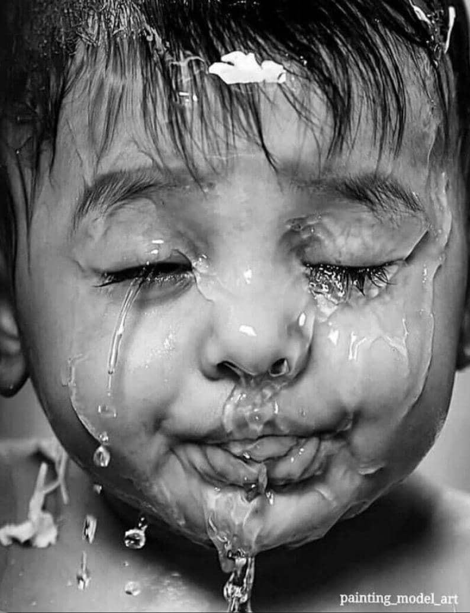

Wellcome To The Black And White Photo Gallery Web Page
This is ablack and white photo gallery website that features a collection of the best black and white photographs captured and disgned by famous photographers and editors.
Reasons Why Black And White Photos Are Popular
- Focus On Emotion
- Classic Beauty
- Enhanced Contrast and Texture
- Simplicity and Expression
- Mysterious and Deep Feeling
Without color, more attention is given to emotions, facial expressions, and the mood of the image.
Black and white photos have a nostalgic and artistic feel that gives them a timeless look.
These photos often highlight contrasts and textures more effectively.
Removing color helps convey the message more directly without distractions.
Black and white photography often creates a more dramatic and thought-provoking atmosphere.
‟Black and White Photography Captures theSoul”
“Ted Grant”
